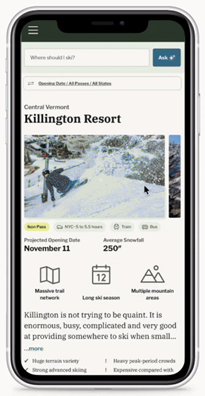
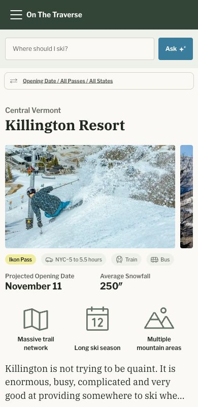
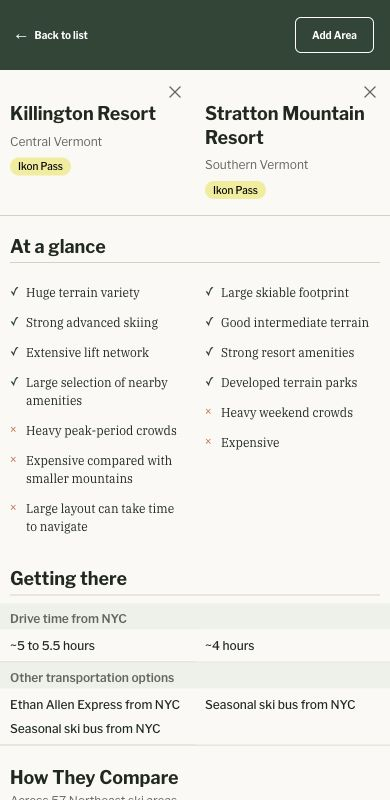
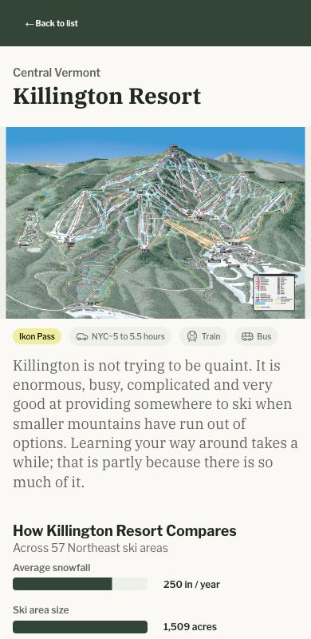
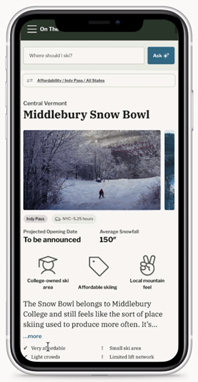

On the Traverse / Case study
Helping skiers choose
their next mountain
A mobile-first Northeast ski guide that brings mountain data, editorial context and natural-language discovery into one decision.

- Role
- Product design & implementation
- Product
- Northeast ski discovery & comparison
- Stage
- Independent project
In development - Stack
- Next.js · TypeScript
Google Sheets · OpenAI - Collaboration
- Design and implementation by me, with editorial collaboration from a fellow writer/journalist.
The product problem
A bigger mountain isn’t
always a better fit.
Choosing where to ski means weighing terrain, travel time, pass access and the character of a place. Those details are difficult to compare when each mountain presents itself differently. A large resort and a small independent hill can both be good choices for very different days.
I designed On the Traverse around that decision: help a skier understand the tradeoffs, narrow the field and look more closely at a few mountains. The intended audience includes New York–area skiers balancing the drive with what they want from a day on snow.
Information architecture
Comparable choices begin
with a common model.
Before a card, filter or recommendation can be useful, it needs a consistent definition of a mountain. I modeled resort information in Google Sheets and TypeScript so the same fields could support every view, while allowing ordinary content edits without changing application code.
| Information | Examples | Design responsibility |
|---|---|---|
| Mountain facts | Vertical, acreage, annual snowfall | Keep units visible and unknown values distinct from zero. |
| Access & logistics | Passes, NYC drive time, transport | Help people narrow viable options before judging preference fit. |
| Experience ratings | Family, beginner, tree skiing, après | Distinguish subjective assessments from measured facts. |
| Editorial context | Descriptions, highlights, pros & cons | Explain the character and tradeoffs that numbers leave out. |
The experience
One decision, three views.
Explore helps people build a shortlist. Compare aligns the tradeoffs. Details supplies the context needed to decide. I implemented the flows in Next.js and TypeScript, using shared cards, metadata and selection controls to keep the experience consistent.

Build a shortlist
Give browsing a point of view.
Photography and editorial context sit alongside passes, access and mountain information. Search and manual filters provide different entry points into the same catalog.
Compare is a selection action; Details is navigation. Keeping those controls distinct makes the next step explicit.
Local implementation capture

Understand the tradeoffs
Keep the same question in the same row.
Compare places selected mountains in aligned columns so people can scan across the same attributes. Selection supports up to three resorts.
The capture shows Killington and Stratton. It demonstrates the comparison structure; it does not establish which mountain is right for a particular trip.
Local implementation capture

Look more closely
Add depth without losing the shortlist.
Resort details bring together terrain, practical information and editorial context. Intercepted navigation and shared preference state are designed to let people return to Explore without rebuilding their search.
Session continuity, missing-data presentation and responsive detail behavior remain important acceptance checks.
Local implementation capture
AI product judgment
Let language express intent.
Let code make the selection.
A skier may describe a day rather than choose a sequence of filters. I modified an LLM backed parser that turns those preferences into a structured contract. Application code then applies constraints and ranks records from the loaded catalog.
“Good apres, close to saratoga.”

An explanation of the architecture, not a captured model response.- 01 / Interpret
Extract preferences
Translate language into supported fields such as snowfall preference, location and terrain-park interest.
- 02 / Constrain
Check eligibility
Apply explicit constraints to catalog records. Keep unsupported criteria and missing information visible.
- 03 / Rank
Order the candidates
Score supported preferences in deterministic code and generate reasons from the matched attributes.
The trust boundary
The model interprets the request. It does not invent resort facts or choose mountains from its own knowledge. A match score describes heuristic fit; it is not a probability that someone will enjoy a trip.
Designing the limits is part of the feature.
Unsupported requests
Show an unverified state when the product cannot support a criterion. Exact drink availability and live conditions require evidence outside this model.
Geographic ambiguity
Distinguish location proximity, straight-line distance and stored NYC drive time. They answer different questions.
More than three candidates
The source includes an initial shortlist with inline expansion. Ranking, filters and selection continuity still need end-to-end validation.
Design through implementation
The small states carry
a lot of the experience.
Moving between design and code made details such as selection limits, label wrapping and return navigation concrete. I used source reviews and design audits to identify where visual consistency and interaction behavior needed closer attention.
Put the question first on mobile
Source-level iteration moved Ask above Sort & Filters while retaining browsing controls. Shared preference behavior remains a validation priority.
Keep control semantics clear
Separate sorting, filtering, comparison selection and detail navigation. Refine selected and limit states while preserving their different jobs.
Audit the experience between screens
Review label wrapping, control names, touch targets, dialog focus, scroll restoration and loading or empty states. Physical-device checks remain part of the next validation pass.
What this work demonstrates
- Product design carried into application code.
- A shared data model across discovery and comparison.
- An explicit boundary between AI interpretation and recommendation logic.
What I would validate next
- Can skiers explain why a mountain matches their request?
- Can they compare and return to browsing without losing context?
- Do unsupported criteria and unknown facts remain clear?
The most useful lesson so far is that recommendation quality depends on the information model and the treatment of uncertainty. The next milestone is evidence from real use: task completion, misunderstood criteria and comparison behavior. Conversion, retention and usability improvements have not yet been established.
Evidence and scope +
This narrative uses the On the Traverse Project Knowledge Base, including its October 14 update, and the local implementation inspected for these captures. Screenshots document interface behavior, not a verification of every displayed resort fact. Some data, accessibility and fallback issues remain open. Booking, live conditions, personalization and review-informed ranking are future directions.
Editorial collaboration should be credited by name before a public portfolio release. The exact project start date and collaboration split should also be confirmed.